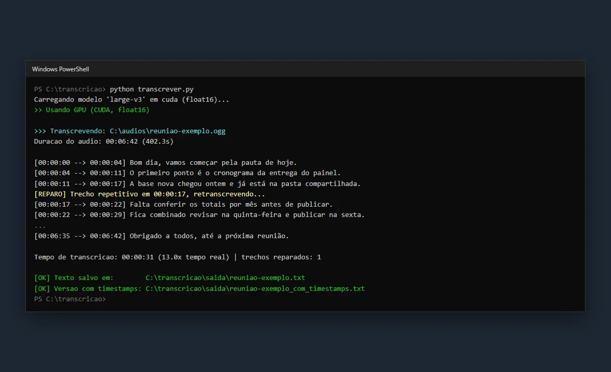

PortfólioAplicativos, jogos e automação
Transcritor de áudio
Transcrição de áudios e vídeos em português, um arquivo ou uma pasta inteira, com o modelo Whisper large-v3 rodando no próprio computador. Tem proteção contra laço de repetição e gera texto, texto com tempo e JSON com tempo por palavra.
- Modelo
- Whisper large-v3 (faster-whisper)
- Saída
- TXT, TXT com tempo e JSON
- Execução
- Local, sem envio do áudio
- Aceleração
- GPU com volta automática para CPU
8formatos aceitos: mp4, wav, mp3, m4a, ogg, opus, mkv, webm
16trechos de 30 s por lote na GPU
3arquivos de saída por áudio
Tela
O programa roda no terminal. A tela reproduz as mensagens que o script imprime.


Processo
Entrada
Arquivo ou pasta8 extensões
Modelo
GPUCUDA, float16, lote de 16
CPUint8, lote de 4, se a GPU falhar
Transcrição
Corte de silênciopausas acima de 500 ms
Busca em feixe5 hipóteses
Dicionáriotermos do projeto, opcional
Conferência
Trecho repetitivo?palavras iguais ou texto que comprime demais
Reparo
Retranscreve o trechosem contexto anterior, 6 temperaturas
Último recursolimita a 3 repetições
Saída
nome.txttexto corrido
nome_com_timestamps.txt[HH:MM:SS --> HH:MM:SS]
nome.jsontempo por palavra, em ms
Proteção contra repetição
- Mesma palavra4 palavras ou mais, todas iguais.
- Pouca variedadeMenos de 30% de palavras diferentes num trecho de 8 palavras ou mais.
- CompressãoTexto que fica mais de 2,4 vezes menor no zlib.
- ReparoO trecho volta ao modelo com penalidade de repetição 1,1 e bloqueio de sequências de 4 palavras.
Saída em JSON
Usada para sincronizar legendas e cortes de vídeo.
{
"source_file": "reuniao-exemplo.ogg",
"language": "pt",
"duration_ms": 402300,
"model": "large-v3",
"word_timestamps": true,
"segments": [
{ "id": 0, "start_ms": 0, "end_ms": 4120,
"start": "00:00:00", "end": "00:00:04",
"text": "Bom dia, vamos começar pela pauta de hoje.",
"words": [
{ "word": "Bom", "start_ms": 0, "end_ms": 260, "probability": 0.991 },
{ "word": "dia,", "start_ms": 260, "end_ms": 610, "probability": 0.987 }
] }
]
}Estrutura do arquivo gerado por transcrever_json.py. Dados fictícios.
Uso em outros projetos
A versão com JSON alimenta as legendas do projeto American Legends. A mesma base, com o idioma trocado para inglês, transcreve a narração dos episódios.
Tecnologias
Pythonfaster-whisperCTranslate2CUDA